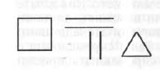
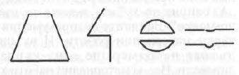
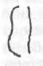

Беседа 3679 от 3877 · Беинса Дуно
Нова епоха
Отче наш
Изгрява Слънцето
(Направихме следното упражнение: ръцете настрани. Дясната ръка пред лявата с допрени пръсти. Дясната се движи по лявата пред гърдите и настрани. Лявата ръка се поставя пред дясната с допрени пръсти, движи се лявата по дясната пред гърдите и ръцете настрани. Няколко пъти.
Ръцете над главата горе с допрени пръсти. Сваляне на ръцете до темето на главата, като пръстите си остават все допрени и когато дойдат над главата, дланите образуват хоризонтална линия. Издигане ръцете високо над главата, като се обтягат. Няколко пъти това.)
Не си туряйте букаи на краката. Нещастие е, когато си туряте букаи и не знаете как да ги извадите, не може да се движите. Турите една мисъл, която е спънка в живота. Трябва да се научите кои мисли са производителни. Вземете, някои хора страдат от краста. Едни малки животинки се разплодяват по кожата на човека, те чоплят и ти започваш да се чешеш. Има разни церове, но може 4, 5, 6 месеца да ти вземе, докато се освободиш от тях. Постоянно се чешиш. Тук се чешеш, там се чешеш. С чесане крастата не минава. Ти правиш упражнения, разместваш ги от едно място на друго. Подвижиш ги, тям им става приятно. Тук, там – навсякъде по тялото. Всеки, който страда от краста, по-дълго ще живее, понеже е правил упражнения. Тия упражнения продължават живота. Крастата е благословение, който разбира. Седи някой човек и не прави никакви упражнения, мечтае. Казва: „Аз имам възвишени мисли“. В какво стои една възвишена мисъл. Един добър цигулар трябва да има един хубав тон. Един ум е хубав, когато произвежда хубави мисли. Едно сърце е добро, когато произвежда добри чувства и желания. Една душа е добра, когато прави Добро.
Трябва да излезем от обикновения ред на нещата. Казва някой: „Аз вече съм добър“. Че си добър, добър си. Че знаеш да свириш, знаеш. Но как свириш? От свирене до свирене голяма разлика има. Запример някой път някои свирци свирят. Авторът направи песен, да покаже, че едно семенце като е посято, израснало и цвят дало. Но цигуларят като свири, ни най-малко не показва този процес. Той съвсем друго свири. На един весел човек да му пеете една тъжна песен, защо. Той е весел, а пък вие казвате: „Тъжен е животът, мрачен е животът“. Твоят живот е тъжен и мрачен, а казваш, че и на другите хора е така. Отвори прозорците си. Твоята погрешка е, че ти си затворил прозорците и няма светлина. Не отдавайте вашата скръб на другите хора! Сега ще ви дам две правила: ако си силен, никога не позволявай на слаби хора да се бият пред тебе. Ще им кажеш: „В мое присъствие аз не позволявам да се бият слаби хора“. Ако се бият, ще ги вдигнете нагоре и ще кажете: „Забранявам ви, аз съм господар на положението“. Ако сте слаб, позволете на силните да се бият, гледайте ги отдалече как се бият като боксьори. Ако си силен, не позволявай на слабите да се бият. Ако си слаб и забраняваш на силните да се бият, ставаш смешен. Слабият не трябва да забранява. В биенето силните хора се бият. Англичаните и германците са силни хора, нека се бият. Защо се бият силните хора? Вие си мълчете, щом сте слаб, не си давайте мнението. Вие давате тон, защо се бият слабите. Да мълчи невежият, да не си дава мнението. Вие седите по някой път и питате защо злото е дошло в света. Не е ваша работа. Защо сиромашията е дошла, не е ваша работа. Като дойде сиромашията, приеми я, разговори се с нея, ще видиш – отлична мома е, пъргава е. Навсякъде кара хората да работят. Всички ония, които са минали през дисциплината на сиромашията, хора са станали. Всичко в света се дължи на голямата сиромашия. Сиромашията аз тълкувам по произхода ѝ. Сир, сър – значи голям човек, господин. Мах, маг – значи голям. Сиромах значи голям господар, голям господин. Този, големият господин, е богат. По някой път в какво седи вашият идеален живот. Аз, за да видя дали съм добър, като стана сутрин, когато има облаци по небето, казвам: „Ако моята Любов е силна, тия облаци да се махнат отпред Слънцето“. Щом се махнат, Любовта ми е силна. Щом кажа – и небето се изчисти. После казвам тъй: „Ако моята Любов е силна, да се появят тогава малко облаци“. Явяват се. Значи Любов имам. Казвате: „Не се меси в Слънцето, в облаците на Земята“. Но Земята може да се меси на Слънцето колко енергия ще изпрати. Човек може да се меси, но трябва да бъде много разумен.
Вие искате по някой път да се молите. Че как се моли човек без Любов. Казвате: „Аз се молих“. Човек, който се моли без Любов, ни глас, ни слушание. Молитвата е на една педя. Ако вие сте ясновидец, ще видите, че тя е останала като облак над главата ви. Молитвата, това е език на Любовта. Без Любов молитвата ще бъде няма. Щом поддържате Любовта, трябва да знаете да се молите. В какво седи молитвата? Не тия писаните молитви. Вие в какво се различавате? Вие мислите, че се различавате. Че се различавате, се различавате, но по какво се различавате? А, Б, В, по какво се различават тия букви? Буквата А показва слизане, Б показва възлизане, а В показва събиране вътре в себе си. Пишеш А, трябва да слизаш. В еврейския език има една легенда, когато повикал Господ буквите, за да види с коя буква може да създаде света. Всяка буква се явила пред Господа, но Господ създал света с Б-то, понеже то не направило никакво престъпление. Всичките други букви написали лоши думи. Щом една буква напише лоша дума, не може с нея да се създаде светът.
А. Б. В. Г. Д. Ж. З.

Аз съм виждал как българите си създават болестите. Българите като направят една къща, направят един пруст*, една малка веранда отворена. Мият си съдовете и пред лицето на къщата, от верандата хвърлят помията. Днес хвърлят, утре хвърлят и казват: „Не знаем защо, но откак влязохме в тази къща, започнахме да боледуваме“. От тия нечистотии, от тия изпарения образуват се отровни вещества и започват да страдат. Пред къщата не се хвърлят помии. Дойде ти една лоша мисъл, отвориш душата си и мисълта влезне. Казваш: „Нямам разположение на духа“. Че как ще имаш разположение на духа. Задигнали ти 5-10 хиляди лева. Що те интересува, че крали тези пари. Ти туриш в ума си една лоша мисъл, която те отравя. Не мисли за онова, което ти взели. Ти няма да изядеш парите. Тази мисъл няма съзнание, тази мисъл ще образува една отрова, от известни елементи, и от тебе ще направи един неспокоен човек. Следователно никога не допущай в себе си една мисъл, която не е в съгласие със законите на твоя дух, със законите на твоята душа, със законите на твоето сърце, със законите на твоя ум. Да кажем, вие сте говорили за някого. Питам ви: „Защо говорите?“ Казвате: „Аз не съм говорил“. Ако на мене ми кажат, че аз съм говорил за някого нещо, аз ще кажа: „Как го приехте, по вашето радио или някой друг ви го предаде? Ако е прието по вашето радио, вярно е. Щом ви е предадено по друго радио, има погрешка“. По радиото всеки може да знае какво е говорено. Но ако някое лице ви е предало без вашето радио, там има погрешка. Ако е прието по вашето радио, 20% е вярно; ако някои други са ви го предали, на 100% едно е вярно. Следователно на всички ония данни, които ви разправят кой какво е казал, едно на 100 е вярно. Веднъж, двама мои познати се бяха скарали. Пращам един, да ги примири. Колкото пъти съм пращал друг, да примири двама скарани, работата се е влошавала. Казва: „Говорих им“. Говорил им, но ще си спукат главите. Аз отидох, поговорих им и за 10 мин. се примириха. Отишъл да ги примирява, но как. Отива при единия и му казва: „Не му обръщай внимание, той е голям глупак, простак, той нищо не знае. Не му обръщай внимание“. Отива при другия и му казва: „Ти не му обръщай внимание на този простак, на този дивак“. Че как ще ги примири? Така примиряват ли се? Казва: „По Божествено ги примирих“. А за единия и за другия казва, че е дивак. Дивак е, разбира се. Какво значи дивак. Дивак значи чист човек, девица. Дева значи чиста, не е съгрешила. Бих желал всички да бъдете девици. Трябва да знаете закона. Цялото човечество представя един Божествен организъм. Един народ някъде като греши, цялото човечество страда, и другите народи вземат участие. И в Доброто е същото. И в Доброто, и в злото, разпределя Бог в отношенията между хората. Когато има печалба, на всички се дава. Когато има загуба и тя се разпределя. Не мислете, другите като правят погрешки, че вас няма да ви засегне. Ще ви засегне и вие ще носите. Вие като направите Добро, вашето ще се сподели с цялото човечество. Зло ако направите, и то ще се сподели. Не можете да избегнете това. Радвайте се, когато всичките хора се подигат. Не само един трябва да живее добре, всички трябва да живеем добре. Казвате: „Това не е моя работа“. Аз считам – да правя зло, не е моя работа, но да правя Добро, е моя работа. Да говоря Добро, е моя работа, да правя зло, не е моя работа. Да слушам Добро, е моя работа, да слушам глупости, не е моя работа. Често на мене ми казват: „Чакай да ти кажа нещо“. – „Близо до ухото не ми говорў“. Казва: „Пари ми трябват“. Какво ще ми кажеш на ухото, туй, което тайна се казва, само шпионите говорят в тайно. Тайна е само ти да го знаеш. Майката праща детето си и казва: „Ще идеш да повикаш съседката с половин уста“. То отива, туря си ръката на половин уста и казва. Питат го: „Защо туряш ръка на устата си“. – „Майка ми каза с половин уста да ти го кажа“. Майката на друго дете насаждала яйца. За да се излюпят пиленца, българите вярват, ако минава някой поп, трябва да го спрат на пътя. Детето, като видяло попа, казва: „Дядо попе, почакай майка пече една пита, сега ще се опече“. Той се спрял, а тя насаждала кокошката. Питата е кокошката. Майката казва: „Иди кажи на дядо поп, като се върне, тогава ще му дадем питата. Закъсняхме, да не седи да чака“. Детето отива и казва: „Питата не се е опекла, но майка насади кокошката, ти може да си вървиш“. Вие ще спрете някой поп, ще спрете себе си, за да насадите вашата квачка. Казва: „Чакай да ти кажа“. – „Какво ще ми разправя?“
Сега кои са най-важните новини на Изгрева. Тогава да се създаде вестник – „Утринно слово“ или „Изгревско утринно слово“. Всичките новини, каквито новини има, ще ги направим достояние на вестника. Ще го редактираме за 4-5 месеца, „Утринно изгревско слово“. Каквито новини има, ще ги облечем с нови дрехи. Няма да ги говорим както са, но иносказателни ще ги направим. Някоя погрешка ще я турим в разказ, доста романтичен разказ. Да кажем, някоя сестра се е окаляла някъде. Ще направим един хубав образ, че е свършил, няма много хубаво, че се е запознала с калта. Приказвала много Любовно, че писала писма и че калта ѝ е отговорила. Няма да кажем, че е кална, но че се е запознала с високо общество, много благородни, за отличен род, за всичките Божествени неща. Сега нека да се образува един комитет от най-способните сестри за издаването на вестника. Онези, които знаят – хубаво, ами онези, които не знаят? Тъй да го пишете – хубаво, не да го разправяте – проста работа. Преди години дойде една сестра и ми казва, че намерила банкноти – едната от 600 хиляди марки, а другите – от един милион и половина. Казва: „Отиде сиромашията“. Какво излезе? На тия пари изтекъл падежа, ни пет пари не струват. Вие някой път носите такива банкноти, които пет пари не струват. Като говорите за нещо, вие ще изразходите енергия. Като говорите, ако спечелите нещо – хубаво, но нищо не печелите. Сега в света само Доброто е, което пречиства хората. Злото и Доброто – те са на място. За злото и Доброто нищо лошо не може да се каже. И злото е на място, и Доброто е на място. Те вършат една отлична работа. Лошите работи се дължат на хорската неразумност, не знаят как да постъпят, вършат прегрешения, грехове. В Писанието, в Стария завет казва Господ: „Аз Съм, Който творя и Добро, и зло“. Защо умират хората? Едно благо е, да умре човек – прогресът седи в това. Злото дойде, хване човек, умори го, извади го от затвора, освободи го. Някое дете няма бъдеще, дойде злото, вземе го, казва: „Защо ще страдаш?“ Доброто ги донася, злото ги отнася. Казвам: не считайте каквото ви се случва, че е зло в света. Не обвинявайте злото. Всичко произтича от материалните блага. Двама цигулари могат да се скарат по единствената причина, като дават концерт кой да свири пръв, или след като са свирили кой е свирил по-хубаво. Като са свирили, има една придобивка от 30-40 хиляди лева. Единият казва: „Аз свирих по-хубаво, повече ще взема, а другият да вземе по-малко“. Всичките недоразумения между хората почиват върху материални работи. И вкъщи недоразуменията се дължат например, че една кърпа или една тенджера липсвали. Все за материални работи хората се карат. Казвам: напуснете материалния свят, не се занимавайте с него, ако искате да прогресирате. То е един вътрешен процес. Ако във вас страхът стане неестествен, страхът е една предпазливост, но ако страхът стане неестествен, какво ще стане. Ако ред поколения, които са се плашили неестествено, техните гърди се спитяват*. В Америка дробовете на американците постоянно се спитяват. И това се дължи на онази раса, която те изтребиха. Постоянно се спитяват гърдите им и те казват, че имало микроби, които спитявали гърдите. Американците вземат мерки да дишат, спитяват се дробовете им. Ако идете в Америка, ще видите, че всичките страдат. Американците, които минават, че водят много естествен живот, след като пие американецът една чаша чай, ще вземе едно студено ледено или ще изпие едно горещо кафе и след това ще изяде едно ледено. Всичките имат развалени зъби, позлатени зъби имат. Веднъж, като вървя по улиците, иде един и ми бута брадата. Казвам: „Как мислиш, че е дегизирана ли? Не съм дегизиран, ти не си научил занаята си. Изкуствената брада се познава по горната част“. Той мисли, че съм много голям майстор, да не би да се е излъгал. А вие искате наука. Ако искате да знаете кой човек е добър, учете външните признаци на човека. Научете признаците кой може да пази тайна и кой не може да пази тайна. Някои от вас невъзможно е да пазят тайна. Отишли жените при царя в старо време, искали да управляват. Царят бил много умен. Казват: „Искаме и ние да управляваме“. Той турил една птичка, затворил я в един съд. Казва: „Дръжте този съд и след една седмица ще ми го донесете, няма да го отваряте“. Събрали се всичките и казват: „Какво ли има вътре? Я да видим“. Отворили съда и птичката хвръкнала. Като дошъл царят, отворил съда, птичката я няма. Той казва: „Къде е птичката?“ Те казват, че не са отваряли. Той, както е дал съда, така и никой не го е бутал, пък птичката я няма. Ако изгубиш мира си, Господ ти го е дал затворен. Щом изгубиш мира си, изскочила е хубавата птичка. Искал си да погледнеш какво има в съда.
 
Най-първо ние сме призвани да обработим вътрешния си живот. Чул си нещо, не го разпространявай. Не бързайте да го кажете. Ако идете в оня свят, какво ще правите? В оня свят светиите не се интересуват от такива новини. Искате да им разправяте за Земята, а те не се интересуват от земния живот, такъв какъвто си е. Какво ще правите? Мислите ли, че онзи, който рисува карикатури, че това е художество. Аз не бих желал да рисувам карикатури. Понеже, който рисува карикатури, осакаща себе си. Един човек, който говори лошо, осакаща устата си. Един човек, който гледа зле, осакаща очите си. Един човек, който слуша неверни работи, осакаща ушите си. Един човек, който не прави Добро, осакаща ръцете си. Един човек, който не мисли добре, осакаща себе си. Трябва да вършим онова, което Бог е определил. Питайте се: „Туй, което го върша, определил ли го е Бог?“ Ако го е определил, направи го. Ако не го е определил, не го прави, нищо повече. Как ще имаме благоволението на Господа. Много пъти вие питате: „Защо Господ ни даде това?“ Какво трябваше да ви даде Господ? Да кажем, заболи ви кракът. Господ ли ви го даде? Аз по невнимание съм ходил, къпал съм се в студената вода и вследствие на това дошъл ревматизмът. Кой ме е карал да се къпя в студената река? Ще ида на баня. Един наш приятел, преди години, доста виден брат, отишъл да се окъпе и взел един топъл душ. След това се полял със студен душ. Казва: „Не зная, лошо ми е нещо. Къпах се и след топлия душ се полях със студен“. Казвам: никога на топлия душ не турай студен. Тия студените душове са за боговете. На хората топло им трябва, а на боговете студено. Студен – ако си Божествен; ако си човек – топъл душ. Ако сте богове, можете да говорите лоши работи, за злото можете да говорите. Щом не сте богове, говорете друго. Ако говорите за лошите работи, ще се повреди езикът. Казвате: „Лош човек е той“. Ще се повреди езикът ви.
Изпейте: „Духай, ветре“. (Изпяхме песента.)
Тия работи, за които ви говоря, за Добро и зло, не може да се говори общо. Двама приятели могат да си обменят приятелството. Преди всичко, учете се да мислите хубаво. Ако искате да имате хубави чела за бъдеще, хубави очи, хубави носове, хубави вежди, хубави уста, хубави уши, хубави тела, Доброто е необходимо. Без туй ние се осакащаме. Туй трябва да се знае. Доброто, което се потиква от Любовта, ни е необходимо.
(Учителя казва един брат сам да изпее песента „Духай, ветре“.)
Да допуснем, че Божието Слънце грее днес. Това е един от начините. „Божието Слънце“ не трябва да се пее много бързо, понеже Слънцето не върви бързо. Трябва да го пееш така, че да изразиш състоянието на Слънцето. (Един брат изсвири „Божието Слънце грее днес“ и всички пеем.) Това е един от начините. По какъв друг начин може да се изпее? (Учителя пее: „Божието Слънце грее днес, Божието Слънце грее днес, Божието Слънце грее днес, Божието Слънце грее днес. То събужда спящите души, които от векове са спали, да станат и на работа да се захванат, на работа да се захванат, на работа, на работа, на работа да се захванат“.) Тъй може да се изпее. Съвсем друго настроение ще даде. Казвам: по някой път, може да вземете една дъска и с пръстите на ръката си, удряйте по дъската като барабан. Колко е мъчно да се свири на цигулка соло. Цигулката не е много мелодична, много мъчно могат да се извадят нежни тонове. На един цигулар колко години ще му вземе да се научи да свири хубаво? (Учителя свири на цигулката разни мотиви. Учителя свири и пее: „Здрави бъдете, здрави бъдете, добри бъдете, здрави бъдете, здравето е богатство, от Бога дадено за душите. Здравето е от Бога дадено за душите. Здрави бъдете, здрави бъдете“.) Сега като видях, най-малко една четвърт сте здрави. (Пее: „Здрави бъдете, здрави бъдете, здрави бъдете“.) Казвам: Божието благо трябва да се използва в света. Музиката трябва да бъде здравословното състояние, човек да пее за здравето. Първото нещо, човек да пее, да свири за здравето. Аз искам във всинца ви да се събудят онези Божествени дарби, които седят от векове в потенциално състояние. Много нещо е посято и трябва отгоре да поставим малко пръст, та тия хубавите семена да израснат. Ако има един метър пръст, няма да могат да израстат, но да турим два пръста пръст. Хубавото в нас да го проявим. Отсега нататък има за какво да живеем. Отсега нататък трябва да се пее. Отсега именно трябва да започнем да направим една нова епоха.
Това е Живот Вечен, да позная Тебе Единаго, Истиннаго Бога и Христа, Когото си изпратил
16-та лекция от Учителя, държана на 6.I.1943 г. сряда 5 ч. с., Изгрев.